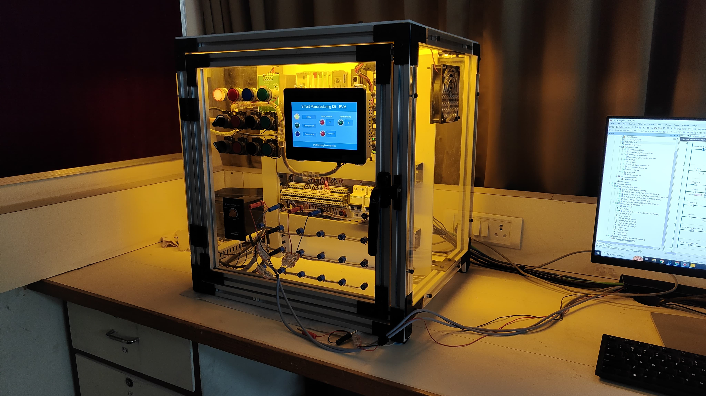
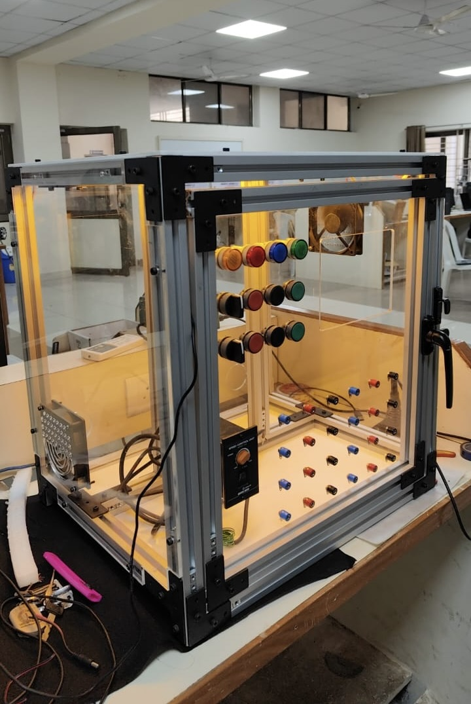
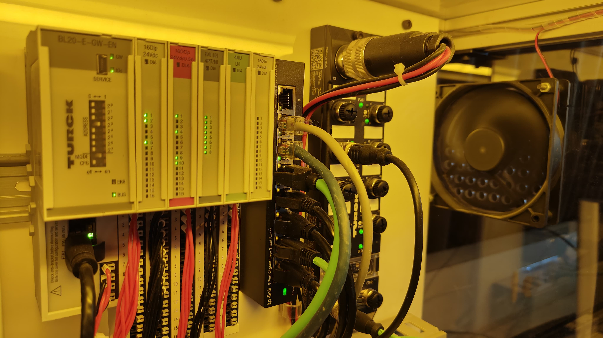
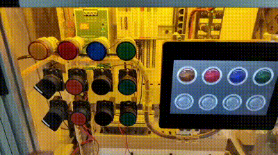
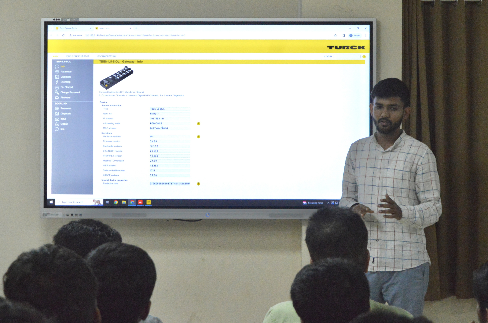

Smart Manufacturing Kit.
A factory floor shrunk to a tabletop. PLC, HMI, OPC UA and IIoT pipelines, built from scratch to teach the next batch of engineers how Industry 4.0 actually works.

Smart Manufacturing Lab, BVM
design, assembly, demo
CAD · IIoT · Turck
The brief.
I built a Smart Manufacturing Kit from scratch, covering the CAD design, the assembly, and the programming. The kit was presented at the National Smart Manufacturing Workshop at Birla Vishvakarma Mahavidyalaya (BVM), run with the IITD-AIA Foundation for Smart Manufacturing.
The institute's Centre of Excellence for Smart Manufacturing (Industry 4.0) uses kits like this one for hands-on research and teaching.
Goal & objectives.
Goal: stand up a center that trains students, delivers Industry 4.0 solutions, offers prototyping and testing facilities, and works toward ISO certification.
- Run training and internships for students and industry professionals, and team up on research that closes technology gaps.
- Deliver Industry 4.0 solutions and offer prototyping facilities with IP protection.
- Build testing facilities for production lines and work toward ISO certification.
The making.
01 · Component Selection
Choosing the components was a joint effort between the Smart Manufacturing Lab at BVM and the IITD-AIA Foundation for Smart Manufacturing. We picked each part to fit the kit's requirements, which set up everything that came after.
02 · Designing & Manufacturing
Building the kit took seven months of planning, design, and assembly. I did the design in Autodesk Fusion 360, watching the tolerances so the parts would fit and function. The hard part was assembly: long hours getting every piece seated and aligned. That is the stage where the CAD model finally became a real thing on the bench.



03 · Programming & Testing
With the assembly and wiring done, I moved to programming and testing. This stage took several calls with Turck's technical team to sort out connectivity and sensor-integration problems. After a few days of focused work, the kit was fully functional.

The workshop.
Professor (Dr.) Anish Vahora and I presented this kit at a national-level workshop on smart manufacturing, organized by Birla Vishvakarma Mahavidyalaya and the IITD-AIA Foundation for Smart Manufacturing. The room was a mix of industry experts and senior-year students. We ran the kit live, walked through the components, and explained that we had built the whole thing in-house. It went over well with both the experts and the students.
On the floor.
